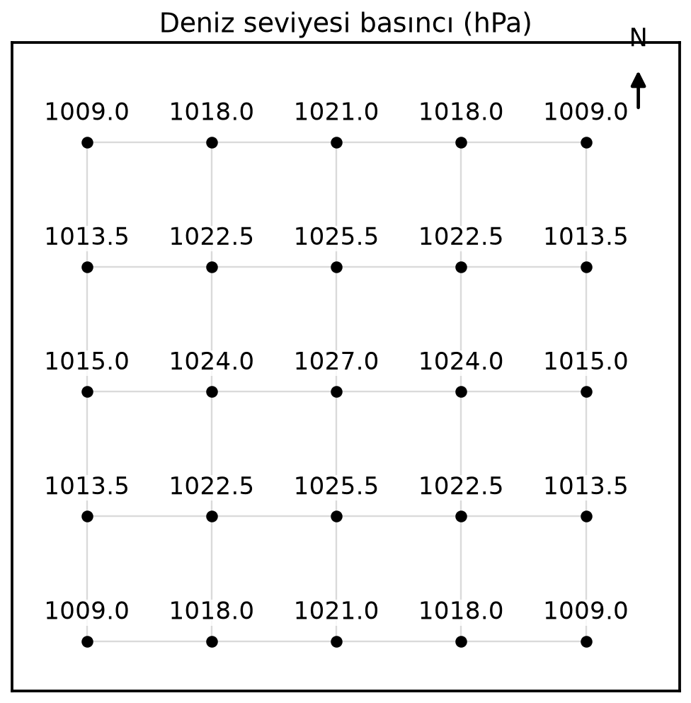
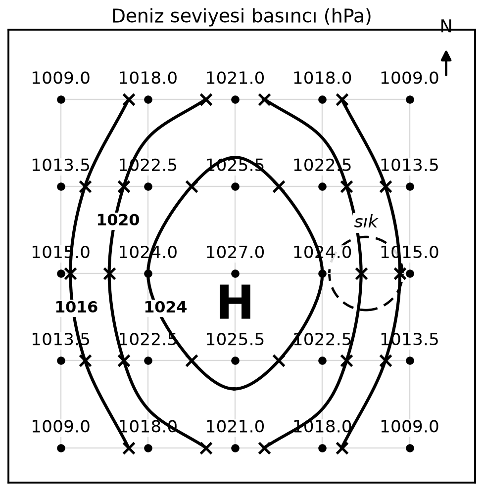

İZOBAR ANALIZI
Konu: Yer basıncı · Çiz + yorumla
- 5 × 5 istasyonlu bir deniz seviyesi basınç haritası veriliyor (değerler şekilde).
- a) 1016, 1020 ve 1024 hPa izobarlarını çiz, değerlerini üstlerine yaz.
- b) Merkezdeki sisteme H ya da L de; izobarların en sık olduğu bir bölgeyi işaretle.
Şekil — üstüne çiz

Hatırlatma (önce dene, sonra oku): Bir izobar iki istasyonun arasından, değerlerin oranına göre geçer: fark ne kadar büyükse çizgi o istasyona o kadar uzak düşer.
İpucu
- Bir istasyon ağında eş basınç çizgilerini basit orantıyla yerleştirmek.
- Önce her satırda geçiş noktasını bul, sonra birleştir: eğri noktalardan geçer, istasyondan değil.
- Kutuya yazmadan çözüme geçme: hatayı görmek için önce kendi cevabın gerekli.
Çözüm — adım adım
- Merkezi bul
- En büyük değer ortada: 1027,0 hPa.
- Her yöne doğru değerler azalıyor → merkez yüksek basınç: H.
- Orantı kuralını kur
- Çizginin yeri: x = (p − p₁) / (p₂ − p₁) × aralık.
- 1024 hPa
- Orta satırda tam 1024,0 istasyonlarının üstünden geçer.
- İkinci ve dördüncü satırda 1022,5 ile 1025,5'in tam ortasında: (1024 − 1022,5) / 3 = 0,5.
- Orta sütunda 1021,0'dan 1025,5'e giderken 3 / 4,5 = 2/3 yolda.
- 1020 hPa
- Orta satır: 1015,0 → 1024,0 arasında (1020 − 1015) / 9 = 0,56 aralık içeride.
- İkinci ve dördüncü satır: (1020 − 1013,5) / 9 = 0,72.
- İlk ve son satır: 1018,0 → 1021,0 arasında 2/3 yolda.
- 1016 hPa
- Orta satır: (1016 − 1015) / 9 = 0,11 → kenar istasyonuna çok yakın.
- İkinci ve dördüncü satır: 2,5 / 9 = 0,28; ilk ve son satır: 7 / 9 = 0,78.
- Sık bölgeyi seç
- Doğu-batı yönünde komşu istasyon farkı 9 hPa, kuzey-güney yönünde en çok 4,5 hPa.
- Fark büyük → izobarlar sık → basınç gradyanı ve rüzgâr güçlü.
- Doğu (ya da batı) kanatta 1024,0 ile 1015,0 arası işaretlenir.
Çözüm şekli

Sınavda yaz
Merkez 1027 hPa → H. İzobar yeri basit orantıyla. Doğu-batıda fark 9 hPa, kuzey-güneyde 4,5 hPa → izobarlar doğu ve batı kanatta sık, rüzgâr orada güçlü.
Merkez bir yüksek basınç; izobarlar doğu ve batı kanatta sık, orada rüzgâr en güçlü.
The centre is a high; the isobars are closest on the east and west flanks, where the wind is strongest.
Cevap + dikkat
- Merkez H (1027 hPa).
- 1024 kapalı elips; 1020 ve 1016 kuzey-güney uzanan yaylar.
- Sık bölge: doğu ya da batı kanat (fark 9 hPa).
Dikkat:
- 1016'yı harita içinde kapatmaya çalışmak.
- Sık bölgeyi değerler en büyük yerde sanmak: sıklığı fark belirler.